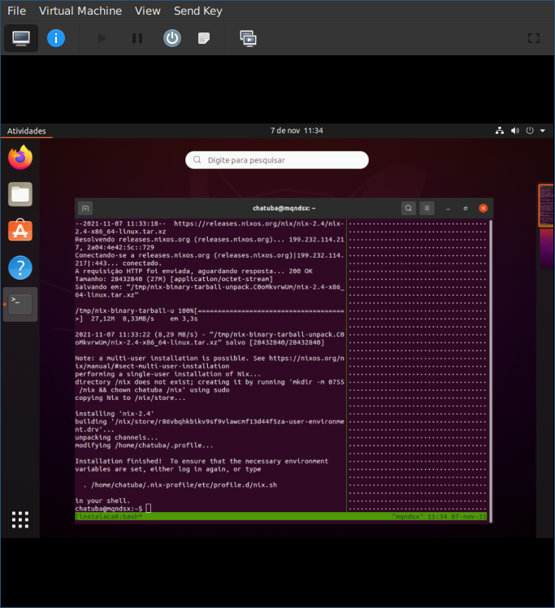
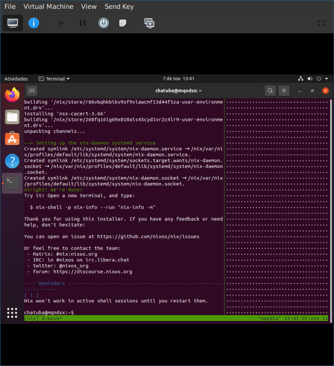

Introdução
Nix é uma ferramenta que aplica conceitos e questões da programação funcional em transformação de arquivos.
Um dos títulos que dão ao Nix é que ele é um gerenciador de pacotes mas a base dele permite que ele seja algo bem mais generalizável.
O Nix em sí é uma linguagem de programação de tipagem dinâmica que segue o paradigma funcional e seus conceitos mas que possui um diferencial que muda totalmente o jogo: O conceito de derivação.
Derivação é um dos tipos de dados da linguagem Nix que vai ser melhor abordado na seção de Tipos de dados.
O que eu posso fazer?
-
Configurar ambientes de desenvolvimento e produção de forma automatizada e totalmente customizável sem ter que fazer gambiarras que não seriam automaticamente replicáveis quando for utilizar em uma outra máquina. (nix-shell, nix develop)
-
Executar programas sem ter que instala-los globalmente primeiro. (nix-shell, nix run, nix develop)
-
Executar o mesmo programa em versões diferentes sem que haja um conflito em relação ao local de instalação dos mesmos.
-
Definir diretamente nos scripts as dependências destes que serão baixadas logo antes de executar os scripts. (shebang do nix-shell)
-
Virtualização de programas apenas se o usuário desejar. Containers e VMs são virtualizados por via de regra, mesmo que containers não virtualizem o hardware. (tudo pode ser executado diretamente)
-
Aproveitar dependências comuns entre programas sem gerar duplicidade de exatamente a mesma coisa. (derivações podem ter dependências em comum)
-
Deduplicação a nível de arquivo dos arquivos gerados e baixados pelo Nix. (nix-store --optimize)
-
Replicação de coisas repetitivas em configurações se baseando em alguma outra coisa (exemplo do módulo do espanso)
-
Distribuição Linux que pode ser totalmente declarativa, sem precisar refazer os passos da configuração em uma nova máquina. (NixOS)
-
Wrappers customizados de programas já trazendo plugins e configuração. (nix-vscode, Neovim lucasew)
-
Compilar o Android do seu celular. (robotnix)
-
Transformar basicamente qualquer tipo de arquivo em qualquer outro tipo contanto que obedeça a lei da derivação
Instalação
A instalação do Nix é feita usando a técnica de curlbash, não é necessário adicionar um repositório na sua distro.
Você cola um comando no terminal e deixa executando.
Quando o script terminar o Nix já vai estar pronto para uso sem ser necessário reiniciar o computador.
Para desinstalar o Nix por completo apenas é necessário apagar a /nix e está feito!
Ao realizar a instalação o Nix criará um conjunto de usuários no seu sistema, estes usuários são necessários para o Nix conseguir garantir o isolamento das transformações.
Não execute a instalação como usuário root, o script de instalação usará o sudo quando for necessário!
Problemas conhecidos
- Usuários de distros baseadas em Red Hat como o Fedora, por exemplo, utilizam um módulo de segurança chamado SELinux, e esse módulo dá problema com o Nix. É aconselhavel desativa-lo. Pode ser que este problema já esteja resolvido quando você ler este manual.
- A primeira versão do WSL não é suportada, use WSL 2!
Tipos de instalação
No Nix existem dois tipos de instalação e a diferença dos dois, além do comando de instalação, está no modelo de segurança empregado.
Single user mode
Ou usuário único, apenas um usuário pode operar o Nix na máquina. É o jeito padrão apresentado no site. Por padrão é o usuário que está chamando o instalador. É mais simples mas se mais de um usuário na máquina utilizar, o modelo de multiusuário é mais indicado.
A /nix no modo de um usuário é atribuída ao usuário que instalou.
Multi user mode
Ou modo de multiusuário, permite que mais de um usuário no sistema possa utilizar o Nix.
Para permitir que uma Nix store seja compartilhada de forma segura entre usuários é importante que usuários não possam rodar builders que alterem a Nix store e o banco de dados do Nix de forma arbitrária porque se puderem poderiam instalar um trojan (cavalo de troia), por exemplo, no sistema e comprometer as contas dos outros usuários.
Para evitar este problema a Nix store e o banco de dados são atribuídos a um usuário privilegiado, geralmente o root, e os builders são executados por usuários especiais, geralmente chamados de nixbld1, nixbld2 e assim por diante.
Quando um usuário do sistema usa o Nix, operações que lidam com a Nix store, como realizações, são enviadas para um daemon do Nix executando na máquina.
Por ser um tanto mais crítica essa questão de segurança apenas usuários confiáveis e usuários pertencentes a grupos confiáveis podem realizar tarefas mais administrativas como especificar caches binários.
Apesar das restrições, usuários normais podem realizar derivações, e consequentemente, instalar pacotes e ambientes sem precisar de alguma permissão administrativa.
Comandos para instalação
Os comandos aqui apresentados foram testados em uma distribuição Ubuntu 20.04.3 LTS executando como uma VM do Virt Manager.
O autor já conseguiu instalar com sucesso no Linux Mint Mate 20 e em uma instalação de 2017 do Debian 9.
Apenas o Debian 9 possui ressalvas pois não estava atualizado o que fazia este apresentar erros de certificado SSL, que podem ser ignorados passando o parâmetro -k no comando curl.
Relembrando: Não execute os seguintes comandos logado como usuário root
FUN FACT: Para as demonstrações em imagem foram instalados apenas o curl, o openssh-server e o tmux em uma instalação Ubuntu recém feita. Entre estas dependências apenas o curl é obrigatório pois o virt-manager por padrão não faz integração de área de transferência então foi-se usado uma sessão tmux e ssh para poder colar em um terminal fora da VM.
Instalação single user
curl -L https://nixos.org/nix/install | sh

Instalação multiuser
curl -L https://nixos.org/nix/install | bash -s -- --daemon

Considerações extra
O instalador vai fornecer bastante informação do que está acontecendo e se você baixar o script e chamar com o bash depois de baixado ele até vai pedir algumas confirmações. Você pode usar isso ao seu favor e de repente encontrar algum tópico que nunca viu na vida para pesquisar.
A linguagem Nix
As operações realizadas pelo Nix gerenciador de pacote são definidas usando uma linguagem de programação também chamada de Nix.
Nix é uma linguagem de programação que possui as seguintes características:
- Funcional: a linguagem tem um comportamento de avaliação que lembra o de expressões matemáticas (declarativa) ao invés de uma sequência de passos (imperativa). Funções são tratadas como valores e como uma forma de criar blocos lógicos que podem ser reusados em outros locais. A imutabilidade permite um isolamento a nivel de função, o que permite uma segurança da pureza da função. Pureza significa determinismo, 2 + 2 vai ser sempre 4 independentemente de quando e onde esta operação for realizada.
- Imutável: não é possível reatribuir estruturas. "Modificações" são feitas com transformações de dados e geralmente objetos entregam uma função, como a override, para poder gerar outro objeto com as alterações desejadas porém sem injetar nos mesmos locais que o objeto original estava. Se a é 2 não é possível reatribuir a 3, ou seja, não é possível modificar um valor por referência.
- Tipagem dinâmica: assim como linguagens como o Python, variáveis não são declaradas com um tipo específico. Listas e attribute sets podem ter itens com tipos diferentes e não são tipados.
- Interpretada: o texto das expressões não é previamente compilado em um executável e então executado. Operações de transformação de arquivos geram arquivos de derivation, que é o mais próximo de compilação que a linguagem Nix realiza.
Tipos de dados
Linguagens de programação expressam algum tipo de cálculo e para expressar esse cálculo podem implementar primitivas de funções, tipos de dados básicos, entrada e saída entre outros.
O Nix é uma linguagem de programação de paradigma funcional, onde imutabilidade de objetos é regra, funções são os tijolos para construir a casa que é o programa.
Os tipos básicos da linguagem podem ser os seguintes:
Numéricos
Inteiro e ponto flutuante e podem ser operados por operações aritméticas assim como é em outras linguagens.
let
a = 2;
b = 2;
in a + b
Textuais
Strings, assim como em outras linguagens.
Strings podem ser declaradas entre aspas (") ou entre duas aspas simples ('').
As duas suportam mais de uma linha, a conveniência da sintaxe com duas aspas simples é lidar com conflitos ao escrever scripts. Aspas duplas são muito usadas no Shell Script e um caso de uso comum é usar o Nix para gerar scripts customizados.
Para juntar duas strings é possível somar ou interpolar elas.
let
str_a = "hello";
str_b = "world";
in {
str_soma = str_a + str_b; # "helloworld";
str_interpolacao = "${str_a} ${str_b}";
}
Listas
Uma sequência de valores que podem ter tipos diferentes.
Assim como os attrsets, listas não podem ser modificadas depois de declaradas.
Para juntar duas listas é usado o operador ++.
let
a = [ 1 2 3 ];
b = [ 4 5 6 ];
in a ++ b
Attrsets
Equivalentes a objetos do Javascript ou dicionários do Python, porém não podem ser modificados depois de declarados.
Para juntar dois attrsets é usado o operador //.
let
a = { linguagem = "Nix"; };
b = { versao = "2.4"; };
in a // b
Também é possível especificar attrsets aninhados usando duas formas que podem ser interutilizadas sem problemas.
let
a = {
linguagem.nome = "Nix";
linguagem.versao = "2.4";
};
b = {
linguagem = {
nome = "Nix";
versao = "2.4";
};
};
in {
inherit a b;
};
Funções
Mesma ideia de outras linguagens. Perceba que não é possível alterar uma variável global por exemplo. Funções no Nix são puras por definição. Ao passar um dado valor constante para uma função esta tem que retornar um outro valor constante, que pode ser o mesmo valor da entrada como é com a função identidade.
No Nix as funções podem ter apenas um parâmetro e para ter o comporamento de funções de mais de um parâmetro é necessário definir uma função que retorna uma outra função que pega o próximo parâmetro.
Esta característica permite aplicação parcial e currying por padrão.
let
sum = x: y: x + y;
in sum 2 2
Derivações
Derivação é o conceito de funções puras aplicadas a arquivos. A forma tradicional é utilizando a memória RAM.
Linguagens de programação geralmente usam um espaço de memória alocado dinamicamente para guardar os objetos em blocos, nas derivações o espaço alocado é na nix-store, que geralmente se localiza na pasta /nix/store. Cada objeto é um item nessa pasta.
Os itens dessa pasta podem ser classificados em dois tipos:
- Derivações: aqueles arquivos de extensão
drvque são basicamente especificações mastigadas para realizar as transformações. em uma derivação - Closures: outros arquivos e pastas, o produto final.
O processo de transformar uma derivação em uma closure é chamado de realização, esses caminhos são gerados
dos drv ou baixados de caches se disponível.

As closures podem ser apenas um arquivo ou uma pasta com arquivos.
Derivações podem ter dependências em outras derivações, o que gera um efeito cascata. Se a depende de b e a for realizada primeiro o Nix realizará b e então realizará a. Este conceito de dependência é aplicado para substituir o comportamento de hashmap de gerenciadores de pacote tradicionais e permite que o Nix tenha dois pacotes do mesmo programa em versões diferentes sem que um conflite com o outro, assim como uma árvore.
O resto basicamente aproveita esta base para produzir algo mais complexo, inclusive o NixOS, sistemas de módulos, scripts de ativação e tudo mais.
Expressões
Linguagens de programação possuem sintaxe e semântica, e o Nix não é diferente.
A linguagem possui várias construções sintáticas para agilizar as iterações com código.
Let
Uma das expressões mais úteis do Nix. Especialmente importante quando existe mais de uma operação na mesma linha e permite que uma operação seja feita em estágios, assim como pode ser usada como um bloco de escopo.
Na essência é como se fosse um attr, tem comportamento de attr, não permite loops de refência assim como attrsets porém o objetivo é construção do escopo local.
O modelo mental para entender a ideia é pensar tipo como teoremas são estruturados. Por exemplo:
Seja x igual a 2 e y igual a 2, x somado a y resulta em ...
Em let expressions é
let
x = 2;
y = 2;
in x + y
Let, em conjunto com inherit e with pode ser usado para importar elementos para o escopo atual e estas capacidades serão abordadas logo em seguida.
Inherit
Provavelmente o que você está pensando é algo relacionado a herança e talvez esteja fazendo o link com linguagens orientadas a objeto. Na verdade o inherit é um açucar sintático para trazer membros de um outro escopo para o escopo atual.
Funciona apenas com attrsets e expressões let, que são as formas que são usadas para implementar escopos em Nix, e pode ser expresso de algumas formas diferentes:
# Traz um valor do escopo atual para dentro do attr
{ inherit builtins; }
# Traz um membro de um attrset no escopo para dentro do attrset atual
{ inherit (builtins) fetchTarball map; }
# Exemplo usando expressões let
let
inherit (builtins) sort;
compara = a: b: a > b;
in sort compara [3 2 5 19 22 (-2)]
With
Uma outra forma de trazer itens de outros escopos para o atual é o with. Fazendo o link com o Python, seria um equivalente a um from x import *.
Esta primitiva não pode ser usada como um valor mas sim como um prefixo para uma expressão que depende desse escopo repassado.
Exemplo
With não pode ser usado dentro de attrsets e let expressions como valor.
{ with builtins; } # Não funciona
let with builtins; in head # Não funciona
Se o usuário quer juntar um attrset especificado com outro pode usar o operador //!.
Traz o escopo builtins para o escopo da expressão em seguida que acessa o item head, que implicitamente referencia builtins.head
with builtins; head
Aviso
With tem uso desencorajado, principalmente no topo de arquivo pois impossibilita a análise estática da linguagem, resultando em erros mais genéricos e difíceis de resolver. Um código evitando withs tende a ser um código mais fácil de manter no longo prazo.
Um jeito comum de lidar com isso é usar uma let expression com inherits trazendo apenas o necessário dos escopos. No nixpkgs isso é bem evidente e existem vários exemplos reais bem simples de entender na pasta lib.
Como pensar em Nix
Linguagens funcionais têm uma correlação bem marcante com conceitos matemáticos e Nix aplica esses conceitos em um domínio peculiar comparado com outras linguagens funcionais.
Avaliação preguiçosa
Nix, assim como linguagens como Haskell, possui avaliação preguiçosa, ou seja, os valores só são calculados quando acessados. Isso permite que o Nix só calcule expressões se estas forem pedidas.
Você pode imaginar um código Nix executando da mesma forma que imaginaria uma expressão matemática.
O Nix avalia as expressões de dentro para fora e é possível manipular esta ordem com parênteses por exemplo. Se a expressão não é referenciada ela não é executada.
Diferentemente de linguagens como Javascript e Python não é necessário encapsular um câlculo em uma função para ter este comporamento.
Pensa num código Nix como uma expressão matemática se abrindo e resolvendo de dentro para fora, se tal parte da expressão não é utilizada ela não vai ser calculada. Isso pode ser um tanto inconveniente para busca de erros pois um código só pode dar erro se for executado mas é essencial para o domínio que o Nix atende. Se Nix não fosse de avaliação preguiçosa todos teriam que baixar ou compilar o indice completo de definições de programas (nixpkgs) para poder usar qualquer coisa e isso definitivamente não seria legal.
Exemplo
let
a = 2 + 2;
b = 4 + 4; # não é avaliado
in a
Esta lógica funciona desde expressões que começam no mesmo arquivo, até em valores que são gerados no decorrer de centenas ou mais de arquivos como é com o nixpkgs.
Recursões
Assim como em outras linguagens funcionais, recursão é um padrão muito comum nos códigos e esta também acontece no Nix.
A recursão por definição precisa ter uma condição de parada e um passo recursivo. Se a condição de parada nunca para então tem-se um loop infinito e isso no Nix é um erro fatal e definitivamente o erro mais chato de se lidar da linguagem pois geralmente não é trivial rastrear a causa mas é possível replicar em exemplos simples como o seguinte:
let
a = 2 + b;
b = a + 1;
in a # pode ser o b também
Por Nix ser uma linguagem de avaliação preguiçosa meio que existe uma chamada de função implícita ao se acessar um valor e se acontece de ter um ciclo dá um problema conhecido como estouro de pilha, ou stack overflow.
Existem técnicas para evitar esses loops infinitos como os design patterns callPackage e inputs e evitar o uso do with no topo do arquivo.
Além de reduzir a possibilidade de loops, técnicas assim permitem que loops sejam diagnosticados de uma forma bem mais simples.
Design Patterns
São padrões usados em código Nix
A versão original destes pode ser encontrada em inglês no Nix Pills.
Funções

inputs
Definições mais dentro do repositório devem evitar importar outros arquivos.
Porque? Loops!
E também porque não fica com um aspecto tão limpo.
Para utilizar as definições que usam este design pattern é usada a função callPackage do nixpkgs!
Exemplo
Antes da aplicação do design pattern
let
pkgs = import <nixpkgs> {};
mkDerivação = import ./autotools.nix pkgs;
in mkDerivação {
name = "graphviz";
src = ./graphviz-2.38.0.tar.gz;
buildInputs = with pkgs; [ gd fontconfig libjpeg bzip2 ];
}
Depois da aplicação do design pattern
{ mkDerivação, gdSupport ? true, gd, fontconfig, libjpeg, bzip2 }:
mkDerivação {
name = "graphviz";
src = ./graphviz-2.38.0.tar.gz;
buildInputs = if gdSupport then [ gd fontconfig libjpeg bzip2 ] else [];
}
callPackage
Utilizando o design pattern inputs é necessário uma forma de acessar a definição no nível acima e é aí que entra a função callPackage.
Esta função consegue desmontar a função definida na definição usando o design pattern input passando valores padrão herdados do nixpkgs sendo utilizado e permite que sejam passados parâmetros extra, inclusive, sobrescrevendo os parâmetros originais.
A função callPackage pode ser deduzida da seguinte forma:
Sendo
seto attrset de entrada que contêm os valores padrõesfa função importada da expressão usando o design pattern inputsoverridesum attrset com valores que serão alterados da entrada
callPackage = set: f: overrides: f ((builtins.intersectAttrs (builtins.functionArgs f) set) // overrides)
A versão do nixpkgs possui um comportamento levemente diferente.
- A função definida acima recebe como parâmetro
fuma função que é a expressão utilizando o design pattern inputs - A função do nixpkgs ao invés de uma função recebe um caminho para um arquivo nix, ou uma pasta, e realiza o import antes.
- A função acima recebe a função diretamente e a do nixpkgs recebe um caminho para o arquivo que importado entrega a função.
override
Uma forma de gerar uma nova attrset utilizando partes da attrset anterior.
Muito comum em customizações de programas já definidos, como por exemplo usar a definição fornecida pelo Nixpkgs do kernel Linux e com isso poder passar modificações para este de uma forma que o usuário não seja obrigado a adotar essa definição ou acabar tendo surpresas pelo gerenciador de pacotes da distribuição ter sobrescrito aquele pacote modificado pelo padrão.
Essa abordagem pode inclusive funcionar com alterações vindo de novas versões do Nixpkgs passando sempre um mesmo patch no código de entrada.
E o princípio por trás desta técnica está em attrsets que podem ser recriadas passando um conjunto de alterações e a técnica é chamada de override.
Overrides podem ser implementados como funções e uma forma de deduzir é:
let
makeOverridable = f: origArgs:
let
origRes = f origArgs;
in
origRes // { override = newArgs: makeOverridable f (origArgs // newArgs); };
in makeOverridable (v: v) {}
Neste caso a expressão vai retornar um attrset com um item override com uma função.
Para poder experimentar as possibilidades abra o nix-repl pelo terminal e digite v = seguido do código acima, o resultado da expressão vai ficar na variável v.
Experimente expressões como a seguinte:
(v.override {hello = "world";}).override {foo = "bar";}
Aviso
No nixpkgs são usados dois tipos de overrides nos pacotes.
- O
overridemuda os parâmetros da função que é definida seguindo o design pattern[inputs](./inputs.md). - O
overrideAttrsmuda os parâmetros passados para a função primitiva que gera a derivação, chamada demkDerivation.
Lei da Derivação
Seja
- uma derivação D(a, b, c, ...) = z que transforma as entradas em z.
- uma função de hash H(x) que calcula um hash de algum x, pode ser por exemplo a SHA256.
Uma realização de uma derivação precisa:
- Para ter acesso a internet: H(z) pré-definido
- Para conseguir executar sem H(z) definido: a definição de todas as derivações de entrada já em formato de closure, ou seja, executadas e acessíveis através da nix store.
Exemplos
- Derivações que baixam coisas da internet para poderem realizar este trabalho DEVEM ter o hash do arquivo baixado definido junto.
- Para compilar o Python é necessário um compilador de C, como por exemplo o GCC. Não é possível realizar a derivação do Python sem um compilador assumindo que a derivação do Python não vai baixar do cache.
- É possível usar o Nix para conversão de vídeos e para realizar a conversão em sí é necessário, por exemplo, um programa chamado ffmpeg. Se a derivação do ffmpeg ainda não estiver realizada em uma closure não é possível iniciar a conversão.
- A closure de uma derivação pode ser exportada para outra máquina evitando assim que ela seja re-realizada, e é assim que caches binários funcionam.
Analogia: hashmap vs árvore
Em estrutura de dados busca-se formas de guardar dados na memória a fim de poder recuperá-los de forma mais eficiente. Não nos aprofundaremos tanto neste assunto, somente o que for pertinente neste caso.
O que é uma hashmap/hashtable/tabela hash?
Se você já programou Python você conhece pelo nome de dicionário, a ideia é basicamente a mesma.
É uma estrutura de dados em que o programador pode associar um valor a uma chave e depois pode recuperar este mesmo valor partindo desta chave.

O que é uma árvore?
É uma estrutura de dados hierárquica, ou seja, tem um ponto mais alto, que se divide entre n caminhos. É composta por nós e arestas. O nó mais alto é o nó raiz, já o nó que não possui filhos é chamado de nó folha. Existem vários tipos de árvores, a mais conhecida é a árvore binária em que cada nó tem até dois nós filhos. Para a nossa analogia assuma que um nó pode ter quantos filhos forem necessários.

O que isso tem a ver com Nix?
Como gerenciadores de pacotes tradicionais gerenciam pacotes? Mais especificamente, como eles aplicam atualizações?
Eu, @lucasew, ja usei Arch Linux por aproximandamente um ano e naquele tempo eu usava um setup com i3wm + polybar. A questão é que o polybar depende de uma biblioteca chamada jsoncpp e vivia quebrando por causa desta bibiliteca. Por quê?
A cada atualização de pacote esta biblioteca virava um arquivo diferente e, consequentemente, o polybar tinha que ser atualizado para procurar pelo novo nome. Mensalmente, quando eu atualizava, o polybar simplesmente se recusava de abrir e aí é que reside a analogia do hashmap.
Quando um pacote é atualizado pelo pacman a versão nova é sobrescrita em cima da antiga e qualquer coisa que assuma algum detalhe de uma versão em específico vai quebrar, e esse é o perigo da mutabilidade.
O Nix não tem esse problema.
Ao invés do pacote polybar depender do jsoncpp, uma derivação que compilará o polybar dependerá da derivação que compila o jsoncpp. Caso o jsoncpp atualize, a derivação do polybar será alterada por consequência.

Externo
Repositórios e ferramentas externas para complementar o aprendizado e a exploração.
Quase todas as referências, se não todas, estão em inglês.
Awesome Nix
O Awesome Nix é uma Awesome List.
Possui links com ferramentas e outras referências do mundo Nix.
Digital Gardens
São bases de conhecimento mantidas por indivíduos e podem possuir dicas muito úteis para aprender alguma coisa nova.
Não são feitos para serem usados como referência mas podem trazer um ponto de vista diferente para o tópico abordado.
Victor Freire
Digital garden desenvolvido usando uma customização baseada no mdbook, o mdzk. Possui artigos úteis como:
Dotfiles
São repositórios Git usando provedores como o GitHub e o GitLab e que possuem arquivos de configuração e scripts pessoais usados pelos donos dos repositórios.
Estes repositórios costumam ser públicos para todos e são muito úteis para aprender alguma forma diferente de organizar código Nix, assim como outros scripts utilitários que também podem estar presentes.
Estes repositórios não costumam ser estáveis para uso no dia a dia porque são pessoais do dono destes porém são muito úteis para ganhar tempo roubando estudando código dos outros que pode ser alterado para satisfazer as suas necessidades.
lucasew
Possui
- Exemplo de definição usando home-manager (homes)
- Exemplo de definição de máquina usando NixOS (nodes)
- Exemplo de extensão de uma definição base (nodes/{bootstrap,common})
- Uso de flakes (flake.nix)
- Uma área de compat para facilitar referências usando o Nix sem flakes
- Funções utilitárias que são carregadas usando a funcionalidade de overlay
- Alguns programas que não estão no Nixpkgs empacotados por fora e acessíveis por overlay
- Gitignore na pasta secrets, onde ficam valores secretos como chaves de API, estes arquivos secretos não vão ser commitados junto com o resto do repositório
- Um arquivo authorized_keys com a chave pública das máquinas para autorizar facilmente em máquinas novas (authorized_keys)
- Um script para aplicar o formatador automático ao repositório (format.sh)
- Um arquivo nur.nix usado pelo bot do NUR para indexar o repositório
- Fundo da área de trabalho (wall.jpg)
- Configurações para poder usar o GitHub Actions para precompilar gerações depois de atualizar o Nixpkgs
- Existem algumas customizações em alguns pacotes que são compiladas sempre que o nixpkgs é atualizado então antes de aplicar a geração localmente é chamado um job do Github Actions que compila a nova geração e manda para o Cachix, quando este job termina é aplicada a nova geração localmente e ao invés de compilar a estes pacotes modificados é apenas baixada a closure do Cachix.
Referências externas adicionais
Manual do Nix em mdbook
Explica várias questões e features do Nix em sí. Não aborda nixpkgs ainda.
nix.dev
Um guia opinativo de como desenvolvedores podem fazer as suas tarefas usando Nix.
NixOS Wiki
Uma wiki nos moldes da Arch Wiki, porém, abordando maneiras específicas do NixOS, como o uso de módulos. Não é tão completa quanto a Arch Wiki mas definitivamente ajuda bastante.
Nix Pills
Um guia mais passo a passo sobre como iniciar no Nix.
nix-1p
Um guia bem direto ao ponto em inglês sobre conceitos básicos de Nix.